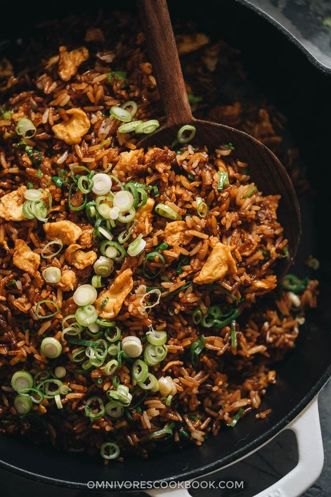

Chicken Fried Rice

Description
Chicken Fried Rice is a delicious and flavorful dish made with cooked rice, tender chicken pieces, vegetables, and a blend of savory sauces. This classic fried rice recipe is quick to prepare and perfect for a satisfying meal.
The combination of seasoned chicken, fresh vegetables, and aromatic fried rice creates a delightful dish that's loved by many.
Ingredients
- Cooked rice (preferably cold)
- Chicken breast or thigh, diced
- Vegetables (e.g., peas, carrots, corn)
- Soy sauce
- Sesame oil
- Garlic, minced
- Ginger, grated
- Green onions, chopped
- Eggs, beaten
- Salt and pepper to taste
Steps
- Heat sesame oil in a pan and sauté minced garlic and grated ginger until fragrant.
- Add diced chicken and cook until browned and cooked through.
- Push the chicken to the side of the pan and pour beaten eggs into the empty space. Scramble the eggs until cooked.
- Add vegetables to the pan and stir-fry until they are tender.
- Add cold cooked rice to the pan and mix well with the other ingredients.
- Season with soy sauce, salt, and pepper. Continue to stir-fry until everything is well combined and heated through.
- Garnish with chopped green onions and serve hot.